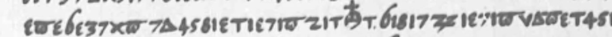
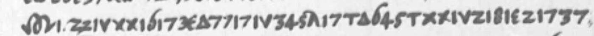
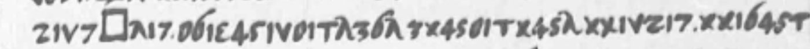
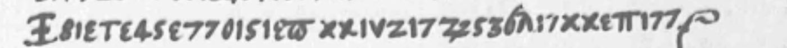

Elector August to Orange, Torgau 18 Nov 1561, cipher enclosure (WVO 57, KHA A 11/XIV B/41-6)
What it says
the Emperor has recently, through a formal embassy, asked him to elect his son Maximilian King of the Romans in the Emperor's own lifetime, and that the other Electors will be asked the same
Source: quoted in the exhibit's selection notes from the verifier's depth sentence.
The reading






The same lines, with the story around them: the display.
Who, where, when
Named in the reading (persons and places as the cipher decodes them)

How we know
The cipher enclosure of Elector August's letter to Orange, Torgau 18 Nov 1561 (KHA A 11/XIV B/41-6; WVO 57), reads with the key of Orange's 1562 cipher (C 247, M 53 of 300 signs) as secret news that the Emperor had asked August to elect Maximilian King of the Romans. No prior decipherment or printed plaintext was located in the sources listed in AUDIT.md (24 Sept 2026); Demandt's regest of the letter (HessJb 38, nr. 113) summarises only the clear text. August's minute in Dresden (with a 'Zettel') has not been seen.
The verifier's safe sentence, quoted from AUDIT.md.
N4 no prior decipherment located (editions searched)largely deciphered (about 98% of the cipher text)period key, rebuilt by us from a decipherment or key sheet of the timetwo audits: yes
C 294 known text · M 7 uncertain (of 301 signs)
- AUDIT.md · decode script decode.json · key key.tsv, key_153.tsv, key_53.tsv, key_74.tsv · image source https://resources.huygens.knaw.nl/media/wvo/images/00000-00999/00057.pdf · folder
- Regenerate:
python3 tools/decode_key.py ciphers/august-van-saksen-1561-64 --check
Search log from AUDIT.md (6 search lines, 30 on blocked or unreachable hosts)
- or printed plaintext was located in Groen van Prinsterer, Gachard, Rachfahl or a full-text phrase search (24 Sept
- Groen 1st ser. t.I by date | an earlier DBNL full-text check re-run for the 1564 section (DBNL groe009arch01, 1 request) | no letter of 16 Sept 1564; confirmed
- or a full-text phrase search (AUDIT.md, 24 Sept 2026). Orange's minute in the KHA (A11-XIVi-04-26), recorded with
- retroboeken viewer willem_den_eerste, its own full-text search and its page OCR, 24 Sept 2026):
- or in a full-text phrase search (AUDIT.md, 24 Sept 2026). Demandt's regest of the letter (HessJb 38, nr. 113) covers
- (2) Does nr. 113 print, paraphrase or summarise the cipher passage? | *No.* WVO's "excerpt" is the witness type: the Dillenburg archivists' 18th-century extracts (Wiesbaden 171 M fol. 4, 40), which Demandt printed as regests. Nr. 113 summ
Unreachable
- OpenAlex answered 429. See section 4.
- Böttiger, Vermählung Oraniens mit Anna von Sachsen (Hist. Taschenbuch 1836); Kretzschmar on Anna of Saxony | unreachable | IA advancedsearch by title: no item found | not seen
- Demandt, Nassau-oranische Korrespondenzen (HessJb 38-39) | not applicable / unreachable | WVO cites it for 57 only, not 126 | not seen
- Japikse (Collectie Japikse, KHA) | unreachable | unpublished 20th-c. copy | not seen
- KHA minute A 11/XIV I/4 nr. 26 | unreachable | not imaged | not seen; see 2.3
- Scholarship: OpenAlex | unreachable | HTTP 429 on first call | not searched
- two of the open-index families (OpenAlex, Semantic Scholar) answered 429.
- behind Cloudflare (1 request, 403 challenge, stopped). This audit checked it through the HTRC Extracted Features
- Böttiger, Vermählung Oraniens mit Anna (Hist. Taschenbuch 1836) | IA advancedsearch by title and by year | no item; unreachable
- Kruse (Anna von Sachsen literature) | IA search; CrossRef | no text; unreachable
- Böttiger 1836; Kruse; Kretzschmar | unreachable | IA title/year search; CrossRef | not seen
- Dresden minute of 57 (Loc. 9941/3 f.268-269) | unreachable | not imaged by WVO | not seen
- KHA minute of 126; Japikse copies of 53, 126 | unreachable | not imaged | not seen
- OpenAlex | unreachable | HTTP 429 (budget exhausted for the shared IP; 4 requests sent before stopping, one more than the rule allows, logged) | not searched
- Semantic Scholar | unreachable | HTTP 429, 1 request | not searched
- Requests this session: resources.huygens.knaw.nl 4 (3 records, PDF 00053); archive.org ~27 (metadata, djvu text, advancedsearch); be-api 14; www.googleapis.com 49; dbnl.org 2; data.htrc.illinois.edu 1; catalog.hathitrust.org 2; babel.hathit
- Anna of Saxony studies: Böttiger (Hist. Taschenbuch 1836), Kruse, Kretzschmar | unreachable (V3, A2; D1: IA title+date search for Historisches Taschenbuch 1835-37, no item) | | *not principal for 126*: they treat the 1561 marriage and Ann
- KHA minute (with 'Zeitung'); Collectie Japikse copy | unreachable, unimaged | | *unpublished witnesses*: N4 does not exclude them. The minute is the one route that could lower the class
- HathiTrust full text | unreachable (Cloudflare, A2) | | a route, not an edition; Rachfahl II.1 reached through HTRC instead
- Open scholarship | V3 + A2 | CrossRef, HAL, Persée covered; OpenAlex, Semantic Scholar 429 (do not block N4: Danzay precedent) | nothing relevant
- tokens; scholarship indexes partly unreachable; the KHA minute unseen.
- books.google.com page text (Goetz pp.64, 86, 114) | unreachable | "Sorry... automated queries" on 3 requests, after 16 search-inside requests at 3.5 s. Stopped, logged in ROOM 10:25 | Goetz read on IA instead
- OpenAlex, Semantic Scholar | unreachable | HTTP 429, 1 request each, stopped (as for A2) | not searched
- Kretzschmar | unreachable | as A2 | gap
- Dresden minute of 57 (Loc. 9941/3 f.268-269, "met een 'Zettel'") | unreachable | not imaged by WVO | unseen. It could lower 57 (N0-in-substance), never raise it
- Rachfahl II.1 (1907) | HTRC token bags only, not read as text | a text or page read of the 1561 chapter and its notes (HathiTrust is Cloudflare-blocked here)
- OpenAlex, Semantic Scholar | 429 twice (A2, A3) | one run from another host or a later session
- api.openalex.org 1 (429); api.semanticscholar.org 1 (429). No subagents.
- scholarship indexes, returned 429 for the third time; under the Danzay and D1 precedent that does not block N4. For 53, the
- Rachfahl, Wilhelm von Oranien II.1 (1907), as text | Not on IA (advancedsearch: bub_gb_hq9AAAAAYAAJ and ...01rachgoog are vol. I, ...00rachgoog is II.2). Google Books GDzTAAAAMAAJ (1907) is NO_PAGES, and a Wayback CDX query for th
Context
Context: to be written from printed sources on file, labelled context (SITE-ITEMS-3).